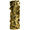

nicolasdestrac
2021
Model making assistant : John Wick : Chapitre 4 Accesoiriste de d�cor : Louis Vuitton Men's Spring-Summer 2022 Fashion Show Accesoiriste de d�cor : Consignes de s�curit� Air France 2020 Assistant Accessoiriste de d�cor : "La R�volution" Assistant d�corateur : Clip Kungs "Dopamine" 2019 Constructeur et accessoiriste de d�cor : publicit� "Diesel" 2018 Constructeur de d�cor : Clip Rosalia "Bagdad (Cap.7 : Liturgia)" Assistant Accessoiriste de d�cor : "Sauver ou P�rir" Constructeur et accessoiriste de d�cor : publicit� "Replay Hyperflex" Accessoiriste de d�cor : Clip Julien Clerc "� vous jusqu'� la fin du monde" 2017 Montage � la suite de la construction du cadre de sc�ne du CFPTS lors de la formation de constructeur de d�cors 2016 - 2017 Rippeur : "Stars 80, la suite" Troisi�me assistant d�corateur : "Au revoir l� haut"  2016 Rippeur (renfort) : "D�barquement imm�diat !" Troisi�me assistant d�corateur : "Chocolat" 2014 R�gisseur g�n�ral : "i-D The A-Z of Beauty" Vid�o r�alis�e en 2012, musique par Lo�c Penven (Glace_9) 2013 Vid�o r�alis�e en 2013 pour Workandprogress 2011 Assistant Accessoiriste de d�cor : "La lettre"
Chad Stahelski, Lionsgate Movies
Chef d�corateur - Kevin Kavanaugh
Virgil Abloh, LaPac
Chef d�corateur - Audrey Malecot
Romain Quirot, Else
Chef d�corateur - Audrey Malecot
John Doe Productions
Chef d�corateur - Gwendal Bescond
Nathanael Day, Val Production
Chef d�corateur - Audrey Malecot
Mark Zibert, LaPac
Chef d�corateur - Audrey Malecot
Helmi, Division
Chef d�corateur - Baptiste Glaymann
Fr�d�ric Tellier, Single Man Productions
Chef d�corateur - Gwendal Bescond
Romain Chassaing, Solab
Chef d�corateur - Audrey Malecot
Michel Gondry, Midi-Minuit
Chef d�corateur - Fred Glon
Thomas Langmann, La Petite Reine
Chef d�corateur - J�r�mie Duchier
Albert Dupontel, ADCB Films
Philippe de Chauveron, Les Films du 24
Chef d�corateur - Fran�ois Emmanuelli
Roshdy Zem, Mandarin Cin�ma
C�sar des meilleurs d�cors 2017 - J�r�mie D. Lignol
Daniel Sannwald, Slowdance
Karl Lagerfeld, Walter Films